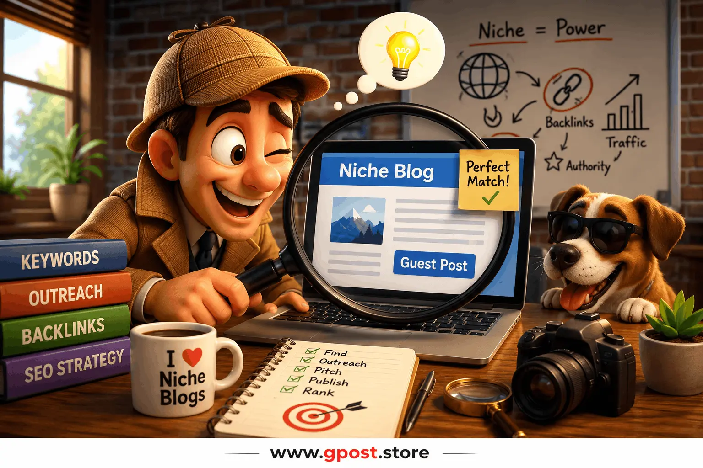

How to find niche blogs for guest posting in 2026
How to find niche blogs for guest posting is one of the most important skills in modern SEO because high-quality backlinks still influence rankings, authority, and organic visibility. The difference in 2026 is simple: Google rewards relevance more than volume. A single contextual editorial backlink from a trusted niche blog can outperform dozens of low-quality links from unrelated websites.
For a practical execution guide, you can also check How to do guest posting step by step to understand the complete workflow from prospecting to publishing.
Most outreach campaigns fail because marketers target random websites, use outdated search methods, or ignore topical relevance. Search engines have become far better at identifying unnatural link patterns, generic outreach, and spammy placements. That means successful guest posting now requires smarter prospecting, better qualification, and personalized communication.
In this guide, you will learn practical systems used by experienced SEO strategists to discover relevant guest posting opportunities, analyze websites properly, qualify outreach targets, and build scalable white-hat SEO campaigns. You will also learn how to find niche relevant blogs for outreach, how to build authority safely, and how to create outreach campaigns that generate long-term ranking improvements.

How to find niche blogs for guest posting using outreach prospecting and SEO qualification workflows
What Is How to find niche blogs for guest posting?
How to find niche blogs for guest posting refers to the process of discovering industry-specific websites that accept contributor content, editorial collaborations, or guest articles for SEO and brand visibility purposes.
The goal is not simply getting backlinks. The real objective is building relevant authority signals that help search engines understand your expertise within a specific topic or industry.
For example, if you run a cybersecurity SaaS company, backlinks from technology, cloud computing, privacy, and enterprise IT blogs carry stronger SEO value than links from unrelated lifestyle or entertainment sites.
Modern outreach campaigns focus on:
- Topical relevance
- Editorial quality
- Organic traffic
- Audience alignment
- Natural anchor text
- White-hat SEO practices
In our experience managing outreach campaigns for affiliate websites, ecommerce stores, and SaaS brands, niche relevance consistently produces stronger ranking improvements than random high-DA links.
A common mistake we see is marketers chasing domain authority without checking whether the site actually matches their industry. Google evaluates contextual relationships between websites more aggressively than ever before.
Why Niche Blog Guest Posting Matters for SEO in 2026
Relevant backlinks remain one of the strongest ranking signals in SEO, especially when they come from trusted niche websites.
According to Ahrefs, pages ranking in the top Google positions consistently earn more contextual editorial backlinks than lower-ranking pages. Search engines use these links to understand expertise, authority, and trust.
Niche blog outreach improves SEO because it creates semantic relevance between your website and authoritative industry sources.
- Improves topical authority
- Strengthens keyword relevance
- Increases referral traffic quality
- Builds long-term brand trust
- Supports sustainable white-hat SEO
Guest posting also helps diversify your backlink profile naturally. Instead of relying on directories, forum links, or automated systems, you earn editorial mentions from real websites with engaged audiences.
Many businesses searching for how to search for guest post opportunities in my niche focus only on links. Smart SEO professionals focus on authority ecosystems. Every relevant mention strengthens your overall SERP presence.
Types of Guest Posting Opportunities
Free or Organic Guest Posting
These are unpaid guest posting opportunities where blogs accept quality content contributions based on expertise and value.
- Pros: Natural editorial links, safer SEO profile, relationship building
- Cons: Time-consuming approval process, stricter editorial standards
Organic outreach works especially well for SaaS, finance, health, marketing, and technology industries.
Paid or Sponsored Placements
Some websites charge fees for publishing guest content or sponsored articles.
- Pros: Faster placements, predictable publishing timelines
- Cons: Higher costs, risk of low-quality link farms
A common mistake we see is marketers paying for links on websites with zero real traffic.
Niche Blog Outreach
This approach targets highly relevant industry blogs using personalized outreach campaigns.
- Pros: Strong topical relevance, higher link quality, better referral traffic
- Cons: Requires manual prospecting and relationship building
This is one of the best niche blog discovery methods for SEO outreach because it focuses on relevance first.
Editorial or Authority Site Placements
Authority websites often publish expert opinions, contributor content, interviews, or industry insights.
- Pros: Strong authority signals, brand recognition, editorial trust
- Cons: Difficult approval process, competitive pitching
These placements usually produce long-term SEO value and stronger brand credibility.
How to find niche blogs for guest posting Opportunities
The best way to find niche blogs is combining Google search operators, competitor backlink analysis, and outreach prospecting tools.
Google Search Operators
Google operators remain one of the fastest prospecting methods for finding guest posting opportunities.
Use searches like:
- "write for us" + your niche
- "guest post" + your industry
- "become a contributor" + SEO
- "submit guest post" + marketing
- "guest blogging guidelines" + SaaS
- intitle:"write for us" + cybersecurity
These searches help identify websites actively accepting contributors.
Competitor Backlink Analysis
One of the smartest strategies is analyzing competitor backlinks using SEO tools.
Tools like Ahrefs and Semrush allow you to:
- See competitor backlinks
- Identify editorial placements
- Find recurring guest posting domains
- Analyze anchor text strategies
- Discover traffic-generating backlinks
Based on 100+ outreach campaigns, competitor analysis consistently reveals hidden opportunities most marketers miss.
Advanced research methods like competitor backlink spying strategy help uncover hidden link opportunities from your competitors.
Prospecting Tools
Several outreach and SEO tools simplify prospecting workflows.
- Ahrefs
- BuzzSumo
- Semrush
- Hunter.io
- Pitchbox
- Respona
These tools help streamline how to build a list of niche blogs for link outreach efficiently.
Mini Guide for Finding Guest Posting Opportunities
- Step 1: Identify your niche keywords
- Step 2: Search Google using outreach operators
- Step 3: Analyze competitor backlinks
- Step 4: Filter websites by relevance and traffic
- Step 5: Find editor or contributor contacts
- Step 6: Build a qualified outreach spreadsheet
Step-by-Step Guest Posting Strategy
1. Niche Research and Target Identification
Start by defining your exact industry categories. Broad outreach usually produces weak results because relevance becomes diluted.
For example, a local SEO agency should prioritize marketing, Google Business Profile, local search, and lead generation blogs instead of generic business websites.
Create topical clusters around:
- Your services
- Audience interests
- Keyword categories
- Industry pain points
- Competitor link sources
This process improves outreach precision and helps search engines understand niche authority.
2. Prospect Qualification
Not every blog deserves outreach effort. Qualification prevents wasted time and protects your backlink profile.
Evaluate websites based on:
- Organic traffic
- Topical relevance
- Content quality
- Publishing frequency
- Spam score
- Domain authority
- Traffic trends
A common mistake we see is prioritizing DA while ignoring traffic quality and content relevance.
In our experience, a niche-relevant DA 35 website with strong organic traffic often outperforms generic DA 70 domains.
3. Personalized Outreach
Generic outreach emails fail because editors receive hundreds every week.
Your outreach should:
- Use the editor's name
- Reference recent articles
- Suggest relevant topics
- Show expertise
- Avoid aggressive sales language
Good outreach feels collaborative instead of transactional.
You can improve response rates by following proven frameworks in how to do outreach for guest posting.
Example opening:
"I recently read your article about technical SEO audits and noticed your audience responds well to actionable optimization strategies."
That feels human. Mass templates do not.
4. Content Creation and Pitching
Your content must genuinely help the target audience. Thin articles created solely for backlinks rarely succeed today.
Strong guest content includes:
- Unique insights
- Original examples
- Industry data
- Actionable steps
- Clear formatting
- Visual assets
Editorial websites prefer content that increases engagement and reader retention.
Pitch multiple headline ideas instead of sending a full article immediately.
5. Link Placement and Anchor Text Strategy
Anchor text optimization matters because over-optimization creates unnatural patterns.
Use diverse anchors such as:
- Brand anchors
- Partial match anchors
- Naked URLs
- Generic anchors
- Contextual phrases
Overusing exact-match keywords remains risky in 2026.
Editorially placed contextual links usually perform best because they appear naturally within valuable content.
6. Track, Measure, and Scale
Every outreach campaign should track performance metrics.
Monitor:
- Published links
- Traffic growth
- Keyword movement
- Referral conversions
- Response rates
- Indexing status
Scaling works best when you document successful processes and repeat proven systems.
SEO outreach becomes predictable once you build reliable prospecting frameworks.
Common Mistakes to Avoid
Most guest posting failures happen because marketers prioritize shortcuts over relevance and quality.
- Spam links: Low-quality placements damage trust signals. Focus on editorial quality instead.
- Irrelevant websites: Generic sites dilute topical authority. Prioritize niche relevance.
- Over-optimized anchor text: Excessive exact-match anchors create unnatural patterns. Use diverse anchors.
- Generic outreach emails: Templates reduce response rates. Personalization improves engagement.
- Ignoring traffic metrics: High DA without traffic often indicates weak value.
- Publishing thin content: Weak guest articles rarely generate long-term SEO benefits.
- Buying mass placements: Quantity-based link packages frequently trigger quality issues.
A common mistake we see is marketers using automated outreach tools without manual quality checks.
Pro SEO Tips for Maximum Results
Advanced outreach campaigns focus on relationships, topical authority, and strategic content positioning.
Use Anchor Text Diversity
Healthy backlink profiles contain natural anchor variation. Mix branded, partial match, and contextual phrases naturally.
Build Internal Links After Placement
Once guest posts go live, connect them strategically through your own internal linking structure.
This strengthens topical clusters and distributes authority effectively.
Prioritize Topical Relevance
Relevant websites amplify SEO impact because Google understands semantic relationships between industries and topics.
This is why how to find niche relevant blogs for outreach matters more than mass prospecting.
Build Relationships Instead of One-Time Links
Long-term relationships produce recurring placements, collaborations, interviews, and editorial mentions.
Editors remember contributors who consistently provide quality content.
Repurpose Guest Content Strategically
Turn guest posts into:
- LinkedIn posts
- Email newsletter content
- Twitter threads
- Video scripts
- Infographics
This expands visibility beyond backlinks alone.
Is Guest Posting Still Worth It in 2026?
Yes, guest posting remains one of the most effective white-hat SEO strategies when executed with relevance and editorial quality.
Google does not penalize guest posting itself. Google targets manipulative link schemes designed solely to manipulate rankings.
Editorial guest posting still provides:
- Authority signals
- Relevant backlinks
- Referral traffic
- Brand visibility
- Industry credibility
SEO ROI Comparison Table
- Guest Posting: High relevance, long-term authority, sustainable SEO value
- Directory Links: Low authority, limited ranking impact
- Forum Links: Weak contextual signals, inconsistent quality
- Niche Edits: Effective if editorially relevant
- Digital PR: Strong authority but resource intensive
In our experience, strategic guest posting still delivers one of the best long-term ROI profiles in SEO.
The future of link building will increasingly revolve around authority ecosystems, topical trust, and editorial relevance.
When to Avoid Guest Posting Opportunities
Not every guest posting opportunity is worth pursuing. Poor-quality websites can damage SEO performance instead of helping it.
Red Flags Checklist
- Zero organic traffic
- Thin AI-generated articles
- Irrelevant content categories
- Excessive outbound links
- Obvious sponsored footprints
- Low-quality design and UX
- No editorial standards
- Keyword-stuffed articles
- Expired-domain spam networks
Google evaluates overall website quality, not just individual links.
Avoid websites clearly built only for selling backlinks.
Google Penalty Risks
Manipulative link schemes can trigger manual actions or algorithmic devaluation.
Risk increases when:
- Anchor text is over-optimized
- Links appear on irrelevant websites
- Content lacks value
- Placements are obviously paid without disclosure
White-hat SEO focuses on editorial quality first.
Alternative Link Building Strategies
- Digital PR campaigns
- HARO outreach
- Linkable asset creation
- Resource page outreach
- Podcast guest appearances
- Industry partnerships
Diversifying your backlink profile improves long-term SEO stability.
Advanced Outreach Workflow for SEO Professionals
Professional SEO teams use repeatable systems instead of random prospecting to scale guest posting campaigns efficiently.
Create Outreach Categories
Separate prospects into categories:
- High authority editorial sites
- Niche blogs
- Industry communities
- Partner websites
- Local publications
This helps prioritize outreach efforts.
Use CRM Tracking
Track outreach status using spreadsheets or CRM tools.
- Contacted
- Responded
- Negotiating
- Content submitted
- Published
- Follow-up required
Organization improves scaling dramatically.
Analyze Published Links
Review successful placements to identify patterns.
Look for:
- Common topics
- Anchor strategies
- Content formats
- Response triggers
- Publishing timelines
These insights improve future outreach efficiency.
How AI Is Changing Guest Posting in 2026
AI tools accelerate prospecting and content research, but human expertise still determines outreach success.
AI can help:
- Identify prospects
- Analyze backlink profiles
- Generate topic ideas
- Organize outreach lists
- Research competitor content
However, editors increasingly reject robotic outreach and generic AI-generated articles.
Human expertise, originality, and relationship building remain competitive advantages.
The best SEO professionals combine AI efficiency with human-quality strategy and communication.
FAQ
What is niche blog guest posting?
Niche blog guest posting means publishing content on industry-relevant websites to build backlinks, authority, referral traffic, and stronger SEO relevance.
Why are niche-relevant backlinks important?
Niche-relevant backlinks strengthen topical authority, improve organic rankings, and help search engines understand industry expertise more accurately.
What is the biggest guest posting mistake?
The biggest mistake is targeting irrelevant or spammy websites that provide weak SEO value and increase backlink risk.
Is guest posting better than directory submissions?
Yes, guest posting provides contextual editorial backlinks, while directories usually offer weaker authority and lower engagement value.
How do I find guest post opportunities in my niche?
Use Google search operators, competitor backlink analysis, and outreach tools like Ahrefs, BuzzSumo, and Semrush for prospect discovery.
How important is anchor text in guest posting?
Anchor text helps search engines understand relevance, but excessive exact-match optimization can create unnatural backlink patterns.
Do guest posts improve Google rankings?
High-quality guest posts improve rankings by increasing topical authority, backlink relevance, and organic trust signals.
Which tools help with outreach prospecting?
Popular tools include Ahrefs, Pitchbox, Respona, Semrush, Hunter.io, and BuzzSumo for outreach management and prospect qualification.
How does guest posting build website authority?
Editorial backlinks from trusted niche websites strengthen domain trust, topical relevance, and industry credibility over time.
Will guest posting still work after 2026?
Yes, editorial guest posting will remain effective because relevance, authority, and trusted backlinks continue influencing search rankings.
Conclusion
How to find niche blogs for guest posting is no longer about collecting as many backlinks as possible. Modern SEO success depends on relevance, editorial quality, topical authority, and strategic relationship building.
The most effective outreach campaigns focus on websites that genuinely match your industry and audience. That approach creates stronger authority signals, higher-quality referral traffic, and more sustainable organic growth.
To move forward successfully:
- Build a qualified outreach prospecting system
- Prioritize relevance over raw domain metrics
- Create genuinely valuable editorial content
Based on our experience managing large-scale outreach campaigns, businesses that focus on long-term authority consistently outperform competitors relying on shortcuts and spam tactics.
In 2026, SEO will favor websites that show real expertise, build trust, and provide content with the right context. Brands that improve their outreach quality today will be the ones that rank higher in search results tomorrow.